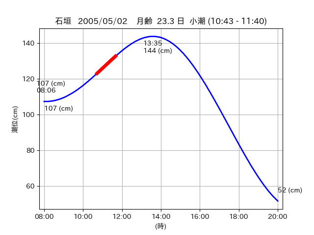
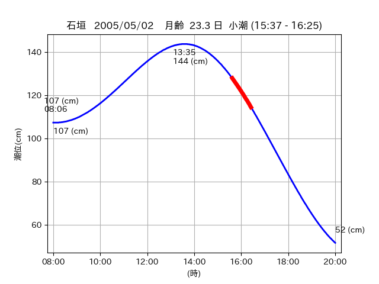

<!DOCTYPE html>
<html>
<head>
    
    <meta http-equiv="content-type" content="text/html; charset=UTF-8" />
    
        <script>
            L_NO_TOUCH = false;
            L_DISABLE_3D = false;
        </script>
    
    <style>html, body {width: 100%;height: 100%;margin: 0;padding: 0;}</style>
    <style>#map {position:absolute;top:0;bottom:0;right:0;left:0;}</style>
    <script src="https://cdn.jsdelivr.net/npm/leaflet@1.9.3/dist/leaflet.js"></script>
    <script src="https://code.jquery.com/jquery-3.7.1.min.js"></script>
    <script src="https://cdn.jsdelivr.net/npm/bootstrap@5.2.2/dist/js/bootstrap.bundle.min.js"></script>
    <script src="https://cdnjs.cloudflare.com/ajax/libs/Leaflet.awesome-markers/2.0.2/leaflet.awesome-markers.js"></script>
    <link rel="stylesheet" href="https://cdn.jsdelivr.net/npm/leaflet@1.9.3/dist/leaflet.css"/>
    <link rel="stylesheet" href="https://cdn.jsdelivr.net/npm/bootstrap@5.2.2/dist/css/bootstrap.min.css"/>
    <link rel="stylesheet" href="https://netdna.bootstrapcdn.com/bootstrap/3.0.0/css/bootstrap-glyphicons.css"/>
    <link rel="stylesheet" href="https://cdn.jsdelivr.net/npm/@fortawesome/fontawesome-free@6.2.0/css/all.min.css"/>
    <link rel="stylesheet" href="https://cdnjs.cloudflare.com/ajax/libs/Leaflet.awesome-markers/2.0.2/leaflet.awesome-markers.css"/>
    <link rel="stylesheet" href="https://cdn.jsdelivr.net/gh/python-visualization/folium/folium/templates/leaflet.awesome.rotate.min.css"/>
    
            <meta name="viewport" content="width=device-width,
                initial-scale=1.0, maximum-scale=1.0, user-scalable=no" />
            <style>
                #map_1d794dc05119ff79e6c9815a58981e6e {
                    position: relative;
                    width: 2048.0px;
                    height: 1600.0px;
                    left: 0.0%;
                    top: 0.0%;
                }
                .leaflet-container { font-size: 1rem; }
            </style>
        
</head>
<body>
    
    
            <div class="folium-map" id="map_1d794dc05119ff79e6c9815a58981e6e" ></div>
        
</body>
<script>
    
    
            var map_1d794dc05119ff79e6c9815a58981e6e = L.map(
                "map_1d794dc05119ff79e6c9815a58981e6e",
                {
                    center: [24.277, 124.032],
                    crs: L.CRS.EPSG3857,
                    ...{
  "zoom": 12,
  "zoomControl": true,
  "preferCanvas": false,
}

                }
            );

            

        
    
            var tile_layer_e82e11a4e0f31413c964ca7e72e9f30f = L.tileLayer(
                "https://cyberjapandata.gsi.go.jp/xyz/seamlessphoto/{z}/{x}/{y}.jpg",
                {
  "minZoom": 0,
  "maxZoom": 18,
  "maxNativeZoom": 18,
  "noWrap": false,
  "attribution": "\u5730\u7406\u9662\u5730\u56f3",
  "subdomains": "abc",
  "detectRetina": false,
  "tms": false,
  "opacity": 1,
}

            );
        
    
            tile_layer_e82e11a4e0f31413c964ca7e72e9f30f.addTo(map_1d794dc05119ff79e6c9815a58981e6e);
        
    
            var marker_7eb792f5d6849aa70923869c32dd5f83 = L.marker(
                [24.2365, 123.9271],
                {
}
            ).addTo(map_1d794dc05119ff79e6c9815a58981e6e);
        
    
            var icon_79f9b1cb52f3c59cf89f7ad1a50f0e8b = L.AwesomeMarkers.icon(
                {
  "markerColor": "blue",
  "iconColor": "white",
  "icon": "info-sign",
  "prefix": "glyphicon",
  "extraClasses": "fa-rotate-0",
}
            );
        
    
        var popup_8bf400128a90ffc9def2b16076681177 = L.popup({
  "maxWidth": "100%",
});

        
            
                var html_f6506e9a182ee44399647a5a05067512 = $(`<div id="html_f6506e9a182ee44399647a5a05067512" style="width: 100.0%; height: 100.0%;"><table><tr><td></td></tr><tr><td><center>20050502 No.1 </center></table></td></tr></table</div>`)[0];
                popup_8bf400128a90ffc9def2b16076681177.setContent(html_f6506e9a182ee44399647a5a05067512);
            
        

        marker_7eb792f5d6849aa70923869c32dd5f83.bindPopup(popup_8bf400128a90ffc9def2b16076681177)
        ;

        
    
    
                marker_7eb792f5d6849aa70923869c32dd5f83.setIcon(icon_79f9b1cb52f3c59cf89f7ad1a50f0e8b);
            
    
            var marker_0971449eacc3c512a325eb5802446c70 = L.marker(
                [24.2304, 123.9244],
                {
}
            ).addTo(map_1d794dc05119ff79e6c9815a58981e6e);
        
    
            var icon_d4edea379c0e80c728db11d0c5c1b641 = L.AwesomeMarkers.icon(
                {
  "markerColor": "orange",
  "iconColor": "white",
  "icon": "info-sign",
  "prefix": "glyphicon",
  "extraClasses": "fa-rotate-0",
}
            );
        
    
        var popup_77b0e2d9e75166f9889271435722df44 = L.popup({
  "maxWidth": "100%",
});

        
            
                var html_b0c022dac7fe85e32b77ccb44b9ff787 = $(`<div id="html_b0c022dac7fe85e32b77ccb44b9ff787" style="width: 100.0%; height: 100.0%;"><table><tr><td></td></tr><tr><td><center>20050502 No.2 </center></table></td></tr></table</div>`)[0];
                popup_77b0e2d9e75166f9889271435722df44.setContent(html_b0c022dac7fe85e32b77ccb44b9ff787);
            
        

        marker_0971449eacc3c512a325eb5802446c70.bindPopup(popup_77b0e2d9e75166f9889271435722df44)
        ;

        
    
    
                marker_0971449eacc3c512a325eb5802446c70.setIcon(icon_d4edea379c0e80c728db11d0c5c1b641);
            
    
            var poly_line_90b3f0875701909f6ca710023905ed1a = L.polyline(
                [[24.2304, 123.9244], [24.2286, 123.9211]],
                {"bubblingMouseEvents": true, "color": "#00FFFF", "dashArray": null, "dashOffset": null, "fill": false, "fillColor": "#00FFFF", "fillOpacity": 0.2, "fillRule": "evenodd", "lineCap": "round", "lineJoin": "round", "noClip": false, "opacity": 1.0, "smoothFactor": 1.0, "stroke": true, "weight": 3}
            ).addTo(map_1d794dc05119ff79e6c9815a58981e6e);
        
    
            var marker_3ae6db41b8a323f141a481b63129190e = L.marker(
                [24.2769, 124.0322],
                {
}
            ).addTo(map_1d794dc05119ff79e6c9815a58981e6e);
        
    
            var icon_637f0d52e8d1d32226f62f298b608342 = L.AwesomeMarkers.icon(
                {
  "markerColor": "blue",
  "iconColor": "white",
  "icon": "info-sign",
  "prefix": "glyphicon",
  "extraClasses": "fa-rotate-0",
}
            );
        
    
        var popup_ac1caf597eba3cd2bd190e21d83b8476 = L.popup({
  "maxWidth": "100%",
});

        
            
                var html_d771cbfc5c471e920af78fd80215f0c3 = $(`<div id="html_d771cbfc5c471e920af78fd80215f0c3" style="width: 100.0%; height: 100.0%;"><table><tr><td></td></tr><tr><td><center>20050502 No.3 </center></table></td></tr></table</div>`)[0];
                popup_ac1caf597eba3cd2bd190e21d83b8476.setContent(html_d771cbfc5c471e920af78fd80215f0c3);
            
        

        marker_3ae6db41b8a323f141a481b63129190e.bindPopup(popup_ac1caf597eba3cd2bd190e21d83b8476)
        ;

        
    
    
                marker_3ae6db41b8a323f141a481b63129190e.setIcon(icon_637f0d52e8d1d32226f62f298b608342);
            
</script>
</html>